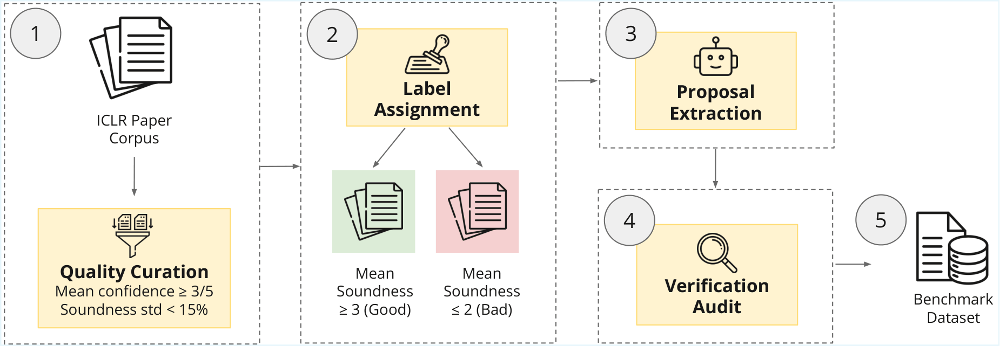
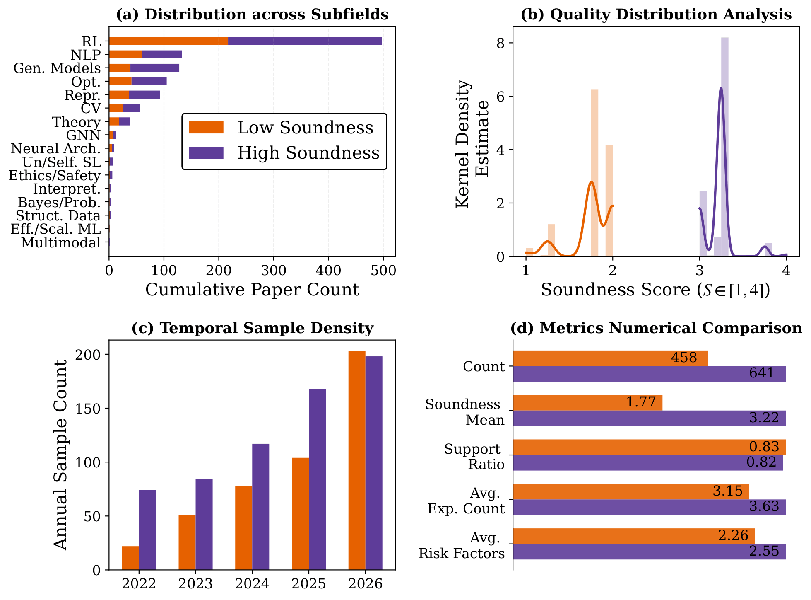
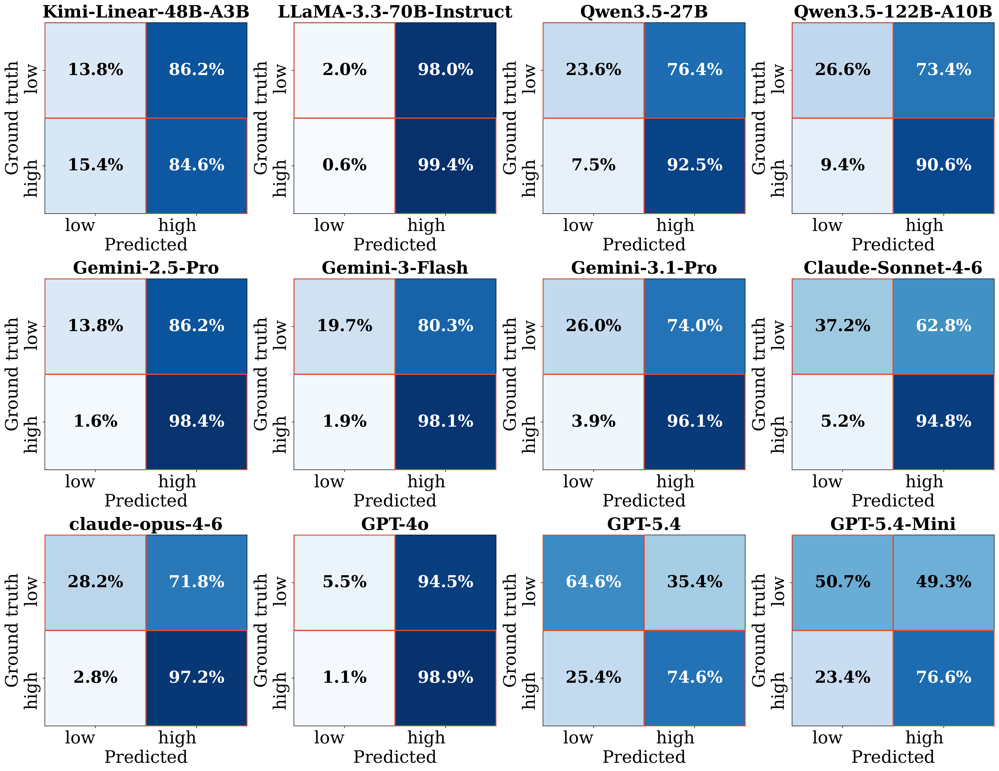
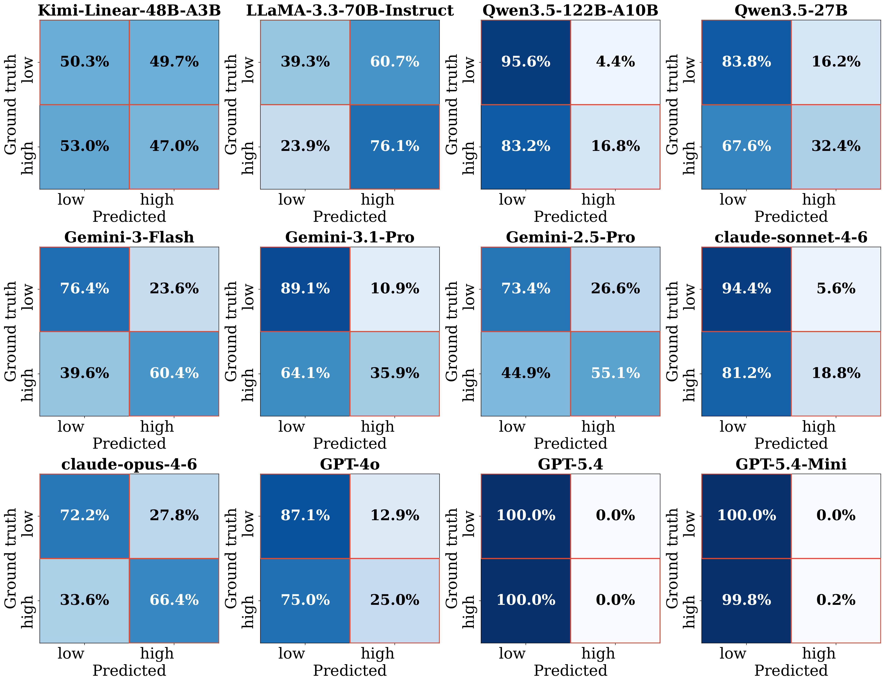

Abstract
Autonomous AI research agents aim to accelerate scientific discovery by automating the research pipeline, from hypothesis generation to peer review. However, existing benchmarks fail to address a fundamental bottleneck: the ability of Large Language Models to judge the viability of a research idea before expending time and computational resources. While LLMs excel at generative tasks like coding and writing, critical soundness judgment is a distinct cognitive challenge.
Without a reliable "first-gate" filter, autonomous agents risk scaling flawed methodology rather than accelerating meaningful science. In this work, we introduce SoundnessBench, a curated benchmark of 1,099 real research proposals, grounded in and verified against published source papers. Our evaluation of 12 frontier LLMs reveals a pervasive optimism bias: models consistently rate proposals as sound regardless of their underlying quality. We find that aggressive prompting does not improve discrimination; it largely shifts errors from false positives to false negatives. Our results point to a deeper capability limitation in judging scientific soundness, indicating that current LLMs are not yet reliable as standalone gatekeepers for scientific rigor.
Contributions
SoundnessBench: A Large-Scale Pre-Execution Benchmark
1,099 research proposals spanning 8 years of top-tier ML submissions (ICLR 2022–2026) and 16 sub-disciplines grounded in real expert peer-review outcomes.
High-Precision Multi-Stage Curation Pipeline
Expert-agreement filtering (4,391 human reviews), atomic-claim auditing to prevent benchmark leakage, near-verbatim proposal extraction, and outcome masking ensuring each proposal is faithfully traceable to source evidence.
Quantifying the Optimism-Fragility Tradeoff
Empirical study of 12 frontier LLMs revealing systemic failure to identify methodological flaws. We characterize an "optimism bias" (74% FPR) that persists across model scales, families, and instruction-tuning stages.
Prompt Fragility as a Core Failure Mode
Aggressive prompting doesn't resolve optimism bias does not improve discrimination; it largely shifts errors from false positives to false negatives.
Benchmark Construction
SoundnessBench is reconstructed from the ICLR public history. We processed over 35,209 initial submissions and 137,940 expert reviews to distill a high-signal subset with auditable, traceable labels.

SoundnessBench pipeline: (1) collect ICLR papers with reviewer metadata and filter for high reviewer agreement; (2) derive high/low-soundness labels; (3) extract near-verbatim research proposal without revealing experimental results; (4) audit extraction fidelity with retrieve-then-verify atomic claims; and (5) assemble the final benchmark.
Dataset Statistics
The final benchmark contains 1,099 research proposals: 458 low-soundness and 641 high-soundness instances, with clear score separation between classes.

SoundnessBench dataset statistics. The benchmark includes 1,099 proposals, including 458 low-soundness and 641 high-soundness instances. (a) Subfield distribution across papers reflects ICLR corpus composition. (b) Soundness score density shows separation between low-soundness (S < 2, mean = 1.77) and high-soundness (S > 3, mean = 3.22) groups, supporting the chosen label boundary. (c) Temporal coverage spans ICLR 2022–2026. (d) Low- and high-soundness pair-count statistics in SoundnessBench.
Main Results
A Consistent Optimism Bias Across All Model Families

Confusion matrices under the standard prompt across 12 evaluated models. Main message: many models are over-optimistic by default. The mean false-positive rate on low-soundness proposals is 74.0% (9/12 models exceed 70%). This pattern appears across model families in this evaluation setting.
Aggressive Prompting Analysis
Aggressive Prompting Alone Cannot Fix the Bias

Confusion matrices under the aggressive prompt across 12 evaluated models. Main message: optimism bias often shifts toward over-conservatism. The mean false-positive rate on low-soundness proposals drops to 19.9% (10/12 models are below 30%), but recall on high-soundness proposals also drops to 36.1% (7/12 models are below 40%). This illustrates strong prompt sensitivity in scientific-soundness judgment for the evaluated models.
Frontier LLMs show a broad optimism bias: models consistently rate proposals as sound regardless of their underlying quality. Under standard prompting the mean false-positive rate on low-soundness proposals is 74.0%.
Aggressive prompting does not improve discrimination; it mainly shifts errors from false positives to false negatives — collapsing high-soundness recall to 36.1% while reducing false positives to 19.9%.
Results point to a deeper capability limitation: optimism bias persists across model scale, instruction tuning, and model family — suggesting reliable scientific judgment will require targeted training, not just better prompting.
Related Benchmarks
Prior benchmarks focus on execution outcomes or post-hoc review of completed papers. SoundnessBench is the only benchmark combining pre-execution evaluation, direct methodological-soundness judgment, and proposal-only input with verified ground truth.
| Benchmark | Stage | Task | Input | Soundness GT | Pre-Exec. |
|---|---|---|---|---|---|
| MLE-Bench | Execution | Engineering | Task + Results | ✗ | ✗ |
| PaperBench | Execution | Replication | Full paper + Results | ✗ | ✗ |
| InnovatorBench | Execution | Research loop | Task + Results | ✗ | ✗ |
| Si et al. (2025) | Pre-exec. | Novelty judge | Proposal | ✗ | ✓ |
| Hindsight | Post-hoc | Impact pred. | Idea | ✗ | ✗ |
| RINoBench | Pre-exec. | Novelty judge | Idea + related works | ✗ | ✓ |
| SoundnessBench (Ours) | Pre-exec. | Methodological soundness | Proposal | ✓ | ✓ |
Citation
@inproceedings{TBD,
title = {SoundnessBench: Can Your AI Scientist Really Tell Good Research from Bad?},
author = {Sy-Tuyen Ho, Minghui Liu, Huy Nghiem, Furong Huang},
booktitle = {TBD},
year = {2026},
note = {Under review}
}